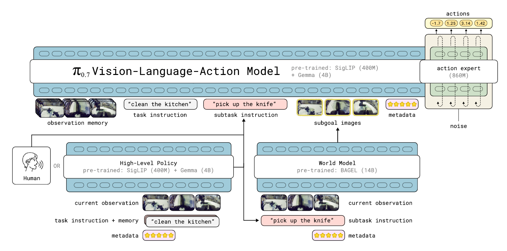

2026 · PHYSICAL INTELLIGENCE · STEERABLE GENERALIST
π0.7 精读
1. 问题：不只描述“做什么”，还要说明“怎么做”
π0.7把多样上下文作为利用异质数据的重要接口。训练数据来自多机器人、人类数据和自主经验，行为策略、质量与速度不同；直接混合可能产生冲突。提示显式说明任务、子任务和执行条件，有助于模型区分这些差异。它不只是换了一段prompt：论文同时描述了观测记忆、模型架构与训练数据配方，不能将所有收益单独归因于提示工程。
2. 方法精读：策略、记忆与外部子目标
2.1 约5B动作策略与MEM式历史编码
论文Fig. 2给出Gemma3-4B初始化的VLM、约860M动作专家，以及对历史观察做时空压缩的MEM式编码器，动作策略总量约5B。历史与当前观察帮助处理部分可观测性。高层语义策略输出下一子任务；可选的世界模型生成多视角子目标。世界模型是另一个模块，不包含在约5B动作策略的参数口径里；图中BAGEL来源模型标为14B，不宜不加解释地称作“一个很小的模型”。

来源：π0.7 论文 Fig. 2 · © Physical Intelligence · 原始文件
原论文第4页 Fig. 2 区域渲染裁切，保留原图字体与内容，未重绘。
2.2 多样上下文的四类信息
- 语言与子任务：总目标之外说明当前步骤、策略或细粒度要求。
- 视觉子目标：多视角近未来场景，为空间关系和操作结果补充视觉条件。
- episode元数据：描述质量、长度/速度等差异，让次优经验有可区分的条件。它不是自动消除坏数据影响的“消毒剂”。
- 控制模态：标明关节或末端等控制接口，避免不同动作语义在训练中被误当成同一种量。
训练会随机省略部分条件，使模型可以接受不同组合；这不意味着所有未知条件或错误子目标都能可靠处理。世界模型生成视觉条件，与动作策略执行后的真实观察更新，仍构成有误差的闭环。


来源：π0.7 官方博客 · © Physical Intelligence


来源：π0.7 官方博客 · © Physical Intelligence
3. 数据与组合：怎样复用专家经验？
作者把RECAP专家产生的经验连同策略/质量等元数据纳入通用训练，并结合更广的机器人与非机器人数据。模型学习在指定条件下生成动作，而不是对所有不同质量行为无条件求平均。数据多样性和条件化的作用需要通过消融区分；“可以使用次优数据”不等于无需清洗、评测或标注。
4. 三类实验，三种“零样本”边界
4.1 已学任务上的通用模型与专家比较
在作者所测的折衣、咖啡与装盒任务上，单个π0.7与相应RECAP特化策略达到相近的成功率和吞吐，部分任务更高。这说明该组任务上的经验能够整合，不是“任意任务通用模型都优于专家”，也不是所有任务都未见过训练数据。
4.2 语言教练与之后的自主执行
未见的长程任务不一定只给一句话就完成。空气炸锅示例包含零样本尝试、实时语言指导，以及使用指导轨迹中的子任务序列训练高层策略的后续实验。实时教练不是完全自主，教练后训练也不是零额外数据；作者强调的是不需要为这些新任务再收集低层遥操作动作。要区分人的语言反馈与RECAP的遥操作接管。
来源：π0.7 官方博客：粗粒度语言教练 · © Physical Intelligence · 原始文件
点击播放，可暂停、拖动进度或全屏；本站不自动播放，也不额外加速。
4.3 未见“本体×任务”组合的折叠迁移
双臂UR5e实验没有该本体的衬衫折叠训练数据，但不表示模型从未见过UR5e或衣物折叠。论文报告π0.7成功率80%，对比首次在该平台折叠的人类专家约80.6%；还需结合试验协议与任务进度理解，不能等同普遍达到人类水平。下面采用官方带子目标叠加的片段，明确其条件设置。
来源：π0.7 官方博客：UR5e 零样本衬衫折叠 · © Physical Intelligence · 原始文件
点击播放，可暂停、拖动进度或全屏；本站不自动播放，也不额外加速。
5. 研究者注记
可分别研究记忆、语义子任务、视觉子目标和质量条件。测试时固定是否允许语言教练、是否调用世界模型以及数据包含哪些本体—任务组合；成本比较要把外部模型的计算也计入。核心开放问题包括条件错误、子目标不可达、历史压缩丢失接触信息，以及低质量数据标注失准后的闭环表现。
6. 一个条件分布，三条不同的信息路径
为便于讨论，可把策略概括为 $p_\theta(A_t\mid I_t,s_t,m_t,\ell,\hat\ell_t,g_t,z,c)$：当前图像 $I_t$、本体状态 $s_t$、历史摘要 $m_t$、总任务/子任务、视觉子目标 $g_t$、质量等元数据 $z$ 与控制模式 $c$。这是本站的记号整理，不是官方API字段，也不意味着每次所有可选条件都存在。
| 信息路径 | 回答什么问题 | 不能替代什么 |
|---|---|---|
| 观测与记忆 | 现在是什么状态，过去观察到过什么？ | 未曾观察到的事实或可靠物理状态估计 |
| 语言与视觉子目标 | 当前准备完成哪一步，希望到达何种状态？ | 可达性验证、碰撞检查和实际执行反馈 |
| 元数据与控制模态 | 以何种质量/速度/接口生成行为？ | 真实性能保证、动作单位与硬件契约 |
同一句“放好杯子”，可能对应不同策略或质量。额外条件让数据中的差异有机会被模型区分；但只有训练数据真实覆盖且标注可靠时，条件才有可学习的对应关系。把元数据写成“高质量”，不会凭空创造数据里从未出现的能力。
7. MEM式记忆：保留过去，不是无限上下文录像
历史编码器对多帧做时空压缩，避免每来一帧都把完整patch序列无限追加。其输出是有容量约束的摘要；“固定数量token”意味着有压缩，也意味着可能丢掉细节。它解决的是部分可观测性的一部分，不等同于显式三维地图、对象持久跟踪或任意长度的完美记忆。
教学场景： 两次当前画面都只看见关上的抽屉，但其中一次历史里曾把目标工具放进去，另一次没有。只读当前图像无法区分这段经历；如果历史中确实观察到放入动作，记忆条件可能提供额外线索。这个例子解释“为什么需要历史”，不声称模型在任意遮挡下都能准确追踪对象。
论文VI-B的具体配置使用有限的历史帧采样，并把相应历史本体状态一起输入；丢弃历史帧时还要同步处理对应状态位置。不要把“编码器可压缩不同长度输入”误读为论文实验实际上使用了无限历史。原图可回看上方Fig. 2，配置见 π0.7 VI-B节。
研究建议： 固定当前观察，分别提供正确历史、无历史和打乱历史；优先用确实需要记忆的任务，而非仅凭当前图像就能完成的抓取。再改变遮挡时间与关键事件距离，检查模型到底利用历史还是只依赖场景相关性。
8. 一次“高层→子目标→动作→反馈”的部署循环
- 整理当前条件： 同步多相机与本体状态，更新历史摘要，保留任务与可用元数据。
- 选择当前子任务： 高层策略或人类提供语义指导。这里注明指导来源，不能把人的输入记成模型自主决策。
- 可选生成视觉条件： 独立世界模型根据当前观察和子任务等条件提出多视角子目标；不启用时使用无子目标的策略路径。
- 生成连续动作： 动作策略读取条件，用flow matching生成块，再通过既定执行接口运行一段。
- 观察真实结果： 用新观察更新记忆和当前步骤；生成的子目标不代替真实传感器，预测成功也不等于已经成功。
这里没有假定高层和世界模型在每个控制点都调用。三者的调用频率、延迟、缓存与失败处理应分别记录；成本比较要把外部模块算进去。单报约5B动作策略参数，不能代表整个带世界模型系统的总内存或每秒计算量。
缺失条件与错误条件不是一种鲁棒性
训练中的条件dropout让模型见过一些条件缺失组合；它不自动覆盖“语义看似合理、但位置错误”的子目标。论文还明确保留控制模式而不对其做dropout，因此不能笼统说每个prompt字段都随机省略。研究错误条件时，应单独构造错误物体、不可达摆放或不同视角不一致等干扰，并在安全的离线/仿真协议中先检验。
9. 三种“泛化”需要三份评测记录
下表是评测记录模板，不是把所有演示归入同一实验，也不是新增成绩。描述零样本能力时，优先填写这些条件，再报告成功率。
| 实验类型 | 训练/测试边界 | 必须注明的辅助条件 |
|---|---|---|
| 已学任务的通用/专家比较 | 任务经验可能在通用训练中出现 | 任务数据、元数据、子目标和专家训练预算 |
| 未见任务的语言指导 | 区分直接尝试、实时指导与指导后高层训练 | 语言交互次数、是否高层再训练、是否新增低层演示 |
| 未见本体×任务组合 | 分别列明本体已见、任务已见及组合未见 | 其他本体经验、目标本体其他任务数据、视觉子目标 |
例如UR5e折衣实验的关键是“这个本体上的这个任务组合未见”，不是完全没有UR5e数据，也不是完全没有折衣数据。空气炸锅视频的关键则是“语言如何引导组合既有技能”，并不等于从头到尾无人干预。这两类研究问题都重要，但不能合并成一句无条件的“开箱任意任务”。
教学评测例子： 若一个任务先做10次直接尝试，再由人类指导10次，之后用指导记录训练高层再做10次，应当按三个阶段分别报告，不能仅把最后10次称为同一个零样本测试。这里的10是示意样本数，不是作者实验规模。
10. 研究建议：用反事实条件拆开“通用能力”
| 模块 / 条件 | 最小对照 | 看什么错误 |
|---|---|---|
| 记忆 | 正确历史 / 无历史 / 打乱历史 | 重复操作、漏步骤、遮挡后的对象状态混淆 |
| 视觉子目标 | 生成目标 / 数据中真实未来帧 / 无目标 | 生成错误与策略执行错误；真实未来帧只能作oracle诊断 |
| 质量元数据 | 正确标签 / 去掉标签 / 有控制的标签扰动 | 行为质量是否可控，还是只学到场景或采集者偏差 |
| 语言指导 | 自动高层 / 受限次数指导 / 人工正确子任务 | 计划选择错误与动作能力不足是否被混淆 |
所有对照都应固定其他条件、总任务预算和干预规则。真实未来图像含有测试时不可得的信息，只能作为上界诊断，不能混入部署成绩。若世界模型给出错误目标而策略准确执行了它，失败归因也不同于策略本身没有读懂正确目标。
面向研究，最值得追问的不是“通用模型是否已经出现”，而是：哪类上下文提高了哪类组合泛化？代价是多少？条件缺失或错误时能否检测并回退？把这些变量展开，才有可重复的后续实验。
11. 从POMDP理解记忆：历史摘要不等于完整世界状态
在部分可观测环境中，当前图像不一定足以决定正确动作。理论上可以用全部历史形成隐藏状态的belief：$b_t(S)=p(S_t=S\mid O_{\le t},A_{<t})$；这只是分析框架，不表示π0.7显式计算了一个精确Bayes后验。它的MEM式模块压缩观察历史和相应信息，得到有限容量的表示。
两个历史可能拥有相同当前画面，却需要不同下一步：一个抽屉里刚放入了目标物体，另一个没有；一块区域刚擦过，另一个尚未擦。历史可以消除这种别名状态，但只有在关键事件被观察并保留下来时才有帮助。未被相机看见的接触细节、已经被压缩掉的事件，不会因为模块名叫memory就自动恢复。
记忆能力应拆成三个环节
- 采到： 历史帧的频率与视角是否覆盖关键事件。
- 存住： 时间/空间压缩是否保留与当前任务相关的信息。
- 用上： 动作策略是否根据这段信息改变决策，而非继续依赖当前画面。
如果第一个环节没覆盖事件，增加后续Transformer容量未必有用；如果只用当前画面就能完成任务，正常/无历史成绩相近也不能说明记忆模块无效。评测任务必须让过去信息真正影响正确行动。
原模型结构与历史配置见 π0.7 Fig. 2和VI-B节。本节的belief表示是教学抽象，有限历史编码不自动等同对象持久跟踪、三维重建或无限时间记忆；后续研究应分别检验这些能力。
12. 历史与目标图像进入哪里：压缩、状态token与mask
论文VI-B给出的配置最多使用四个当前相机视角、有限历史帧和三个子目标视角；历史经时空压缩后使用有限token预算，本体状态也有对应输入。这些是具体实验配置，不应改写成“任意数量相机和无限历史都免费支持”。
来源：π0.7 论文 Fig. 2 · © Physical Intelligence。沿用原文件，未重绘。
图像条件在训练中还有可见性约束。原文描述观察与目标图像块内部双向读取，目标图像还能读取观察，后续文本采用因果关系。它让不同条件按明确顺序组织，而不是把所有位置无条件混成一个全连接序列。
| 条件组 | 需要核对 | 可能的错误 |
|---|---|---|
| 当前/历史观察 | 视角、采样时间、压缩和有效位置 | 缺帧被当成真实黑画面，或顺序错乱 |
| 子目标图像 | 与当前视角对应、来源及可选状态 | 训练真值未来帧被混入部署评测 |
| 历史本体状态 | 与历史帧对齐、投影和mask | 图像丢弃后仍留下不匹配的状态信息 |
| 文本/元数据 | 模板、因果可见性和字段含义 | 把结果标签当作当前已知事实 |
状态接入也不是从旧版本照搬：原文说明π0.7采用线性投影的状态表示，并在丢弃对应历史帧时同步处理状态位置。若研究记忆消融，只去掉图像却保留完整历史状态，测到的不是纯粹“无历史”。
本节按原论文接口解释，不构造未经验证的官方API。实际实现若不可访问，应把相应推断范围写清，不用一张架构图虚构出完整训练脚本。
13. 世界模型子目标的分布差：训练时的未来不等于部署时的预测
真实轨迹中的未来图像可以提供一个达到过的状态；独立世界模型生成的图像则只是对目标状态的预测。两者在物体位置、手部接触、多视角一致性和可达性上都可能不同。策略在真实未来条件下学得快，不等于对任意生成图像都同样可靠。
视觉子目标也不是动作计划本身。它可能表达“杯子已经在架子上”，却没有给出避障路径、接触过程或所需力。动作策略需要根据当前状态生成可执行控制；世界模型生成一个看起来合理的终态，不能代替物理可行性和执行反馈。
诊断世界模型与策略的贡献
- 正确真实未来图像作为oracle诊断，检验策略在理想视觉条件下是否能完成；不能列入普通部署成绩。
- 生成子目标条件，测图像分布差带来的效果与错误。
- 无子目标、仅语义子任务，测视觉条件的净作用。
- 在离线/仿真中施加位置、物体或视角不一致，检验对错误条件的敏感性。
如果真实目标图像下也失败，单独改进世界模型未必能解决；如果只在生成目标下失败，才值得重点检查目标质量、视角对齐或训练分布差。评价中把这两类失败分开，比只看最终成功率更有研究价值。
原论文将世界模型作为独立模块，见 相关子目标与系统架构章节。本节不声称原系统具有可达性验证器或经过验证的安全规划器；若研究加入这些模块，应作为额外系统设计计入成本和对照。
14. 质量元数据为何能利用次优数据，又为何不是因果开关
质量、时长/速度与错误标签往往在episode完成后才知道。训练时把它们作为行为描述条件，是一种有意的结果条件化；部署时指定期望条件，则是在请求与该条件相关的行为分布。它不等于传入了一个已被证明会发生的未来结果。
假设高质量数据恰好主要来自某位操作者、某种光照或某类初始状态，模型可能把这些相关性也编码进质量条件。把标签改成“高质量”无法单独证明某个动作因果地改善了任务；需要控制场景、策略与标注来源，检验条件是否在相同观察下产生有益变化。
次优数据提供什么信息？
它可能覆盖成功主路径之外的状态、不同速度与策略，让模型在明确条件下区分行为。与此同时，错误标注或严重不一致的控制接口也可能污染训练。可使用次优数据不等于不需要清洗，也不等于模型一定能把所有坏经验自动隔离。
| 审计项 | 要问的问题 |
|---|---|
| 质量标注 | 按最终结果、动作过程还是人工主观标准？不同标注者一致吗？ |
| 速度/长度 | 字段的实际单位和归一化是什么，是否与成功/失败混淆？ |
| 错误片段 | 标签在时间上覆盖哪里，是否把恢复动作一起当作错误？ |
| 部署指定值 | 训练中是否覆盖该条件范围，还是只给了一个好听的新字符串？ |
模型缺失条件的训练覆盖，也不等于面对错误条件的鲁棒性。控制模式尤其不能随意改变：它定义动作接口，不是一个无害的风格提示。原文明确不对该字段做与其他元数据相同的dropout，复现不能省略这项区别。
15. 从专家经验到通用模型：数据蒸馏与logit蒸馏不要混用
把RECAP特化策略产生的经验加入通用训练，可以让通用策略吸收专家行为；原文将这一过程描述为一种能力整合。它不自动意味着每一步都使用专家logit、显式KL蒸馏或同一套teacher-student网络。若论文依据的是轨迹数据，应按数据路径解释，而不是凭“蒸馏”一词补出未公开的损失。
通用模型还要同时容纳其他任务、次优数据与条件变化。专家数据的质量、覆盖和配比决定了可学的信息；只保存极少数最漂亮的成功轨迹，可能遗漏专家对困难状态的恢复能力。相反，未经条件区分混合策略，也可能让不同执行风格相互干扰。
怎样验证“整合”而非仅“记住专家任务”？
- 在专家所擅长的任务上，使用相同初始条件、辅助模型与评测规则比较。
- 对其他既有任务做回归测试，检查专家数据加入后是否遗忘。
- 测试明确留出的场景或组合，区分重现训练经验与新的组合泛化。
- 记录专家收集成本与通用训练成本，不能只报最后一个策略的参数量。
如果通用模型与专家在三个任务上接近，结论应限定到该组任务和协议；没有足够统计证据时，“接近”不应进一步改写为严格等效或普遍超过专家。若目标图像和人类提示不同，对照本身也不公平。
这个区分帮助后续研究选择改进点：数据支持不足应补状态覆盖，条件冲突应研究提示与目标，遗忘则需要评测混合训练的保留能力；不能把所有问题都归结为模型参数不够大。
16. 语言教练的实验预算：一句提示到底算多少额外信息
语言指导可以提供对象指代、阶段选择、策略修正或失败解释；这些信息量不同。固定“最多两次提示”不等于固定帮助程度，一句完整步骤列表可能比两句简短纠错提供更多规划信息。评测应保留提示原文、时间和触发原因。
还应区分用户的总任务指令、实时纠正语言、提供的视觉目标和物理复位。只要人的手动操作改变了任务状态，就不能仅统计语言次数后称作完全自主；人类没有新增低层遥操作演示，也不意味着没有提供高层任务信息。
| 阶段 | 可记录的额外信息 | 应怎样命名结果 |
|---|---|---|
| 直接尝试 | 初始任务与既定模型条件 | 对应协议下的无实时指导成绩 |
| 实时教练 | 每条语言、时间、失败后提示与人工复位 | 人在环指导成绩 |
| 指导记录后训练 | 新增高层样本、训练步骤与所用轨迹 | 适配后的自主成绩，不能抹去新增数据 |
一种研究设计是比较自动高层、受限教练预算和人工正确子任务三个条件。它们分别测自主决策、交互式组合与低层执行上界，不应合并成同一个“零样本成功率”。对不同方法还要匹配人类是否知道失败原因、能否观察完整历史等信息。
原论文的语言教练示例说明了既有技能如何通过指导组成更长任务，见 语言指导与后续高层训练实验。本节将其整理成可复查协议，而非把指导能力归为无需任何人类帮助的普遍自主性。
17. 本体×任务留出矩阵：组合未见和要素未见的区别
组合泛化要看训练矩阵，而不只看测试任务名字。设训练包含机器人A折衣、机器人A放杯子、机器人B放杯子，但不包含机器人B折衣。此时测试B折衣，是两个已见要素的新组合；它不同于测试一台完全没见过、状态与控制接口都未知的机器人。
| 教学训练矩阵 | 折衣 | 放杯子 |
|---|---|---|
| 机器人A | 已见组合 | 已见组合 |
| 机器人B | 留出组合 | 已见组合 |
这张矩阵是教学构造，不是作者的实际训练数据清单。真实实验还应细化任务定义：折衬衫与折毛巾是否作为同一任务类，机器人B是否已在相同相机布局下接触过衣物，以及是否有高层/视觉子目标提供额外迁移信息。
如果同一任务在其他本体上出现，模型可以迁移对象与阶段知识；如果目标本体已有其他任务，它可以学到该本体的控制与观察接口。两者的交叉组合本身仍是有意义的研究，但不应被改写成“完全没有该机器人数据也能直接控制”。
可复现的留出审计
- 声明本体与任务分类规则，保存训练中实际出现的组合。
- 排查近似任务、相同对象和自主数据是否跨入测试组合。
- 说明测试中高层、世界模型和视觉目标的来源与可用条件。
- 把要素已见组合未见、任务完全未见、本体完全未见分别报告。
对于原论文UR5e折衣结果，应按其具体留出协议理解，不把一个成功片段扩展成所有新本体控制的结论。
18. 条件错误的鲁棒性：不能只做“有/无”消融
没有子目标与有一个错误但逼真的子目标，是不同输入分布；没有历史与有一段顺序打乱的历史也是如此。训练dropout主要提供部分条件缺失的覆盖，不自动训练出对条件矛盾的检测与可靠回退。
| 条件 | 离线/仿真干扰 | 要诊断什么 |
|---|---|---|
| 历史 | 遮蔽关键事件、改变时间顺序或保留无关帧 | 模型是否依赖正确过去，而非仅利用额外图像 |
| 视觉目标 | 错误物体、位置偏移、多视角不一致 | 生成目标差与动作策略差的交互 |
| 语言子任务 | 与当前观察或总任务矛盾 | 模型是跟随、忽略还是无法区分冲突 |
| 质量元数据 | 合理范围内去除或受控扰动标签 | 条件可控性与训练相关性 |
控制模式不是可随意扰动后真机执行的普通文本。它定义关节/末端等接口，错误值应先由schema与系统协议处理；本节不建议把故意错误控制模式连接真实机器人来“测鲁棒性”。
评测时记录模型是否检测冲突、是否请求帮助、是否继续生成及任务后果。若系统没有专门检测或回退机制，不应仅凭动作较慢就宣称它知道不确定；安全行为需要独立定义和证据。
还要避免把错误条件过于明显地做成训练外乱码，只证明模型拒绝异常格式。更有价值的是在合法格式、看似合理但信息错误的条件上，观察效果如何变化。先在可控环境验证，再讨论实际部署价值。
19. 全系统成本与对照公平：5B不是整个系统的账单
动作策略、高层语义策略与世界模型有不同参数、调用频率和执行依赖。一个任务只需偶尔更新高层，另一个任务频繁生成子目标；即使低层策略相同，总内存、延迟与计算也可能不同。成本报告必须说明启用了哪些模块。
并行调度可以重叠部分计算，但条件之间有真实依赖，不能无条件用三个耗时的最大值代替总延迟。缓存还必须保持条件有效；若任务或观察变了，继续复用旧目标可能减少计算却损害反馈。
专家与通用模型比较要匹配什么？
如果通用模型获得视觉子目标或人类子任务、专家只拿原始指令，两者并非同信息预算。相反，特化策略可能使用额外任务后训练数据。应分别说明数据、外部模块、指导与计算，再解释性能关系。
80%与约80.6%这样的点估计接近，不足以单独证明统计等效或普遍达到人类水平。需要结合样本量、任务协议、操作者与初始状态差异；若做等效/非劣比较，还应事先定义容许差异，而不是看完结果再宣布相当。
这节把原架构与实验阅读连接起来：图中独立BAGEL来源模块、高层与动作策略的边界，应同时出现在成本清单和评测表，而不能只留在方法图角落。
20. 可复现课题：记忆、视觉子目标与高层指导分别贡献什么
研究假设： 记忆主要帮助过去信息决定当前动作的任务，子目标主要帮助空间/阶段条件化，高层指导主要帮助任务分解；它们可能相互补充，也可能掩盖彼此错误。应按任务需求设计对照，而不是只在一个容易抓取任务上删除所有模块。
| 实验组成 | 建议协议 |
|---|---|
| 因素设计 | 记忆有/无、子目标有/无、自动/受限指导，形成最多8种明确组合 |
| 任务分层 | 历史关键、空间目标关键与长程分解关键任务分别报告 |
| 信息匹配 | 控制模式与动作契约保持正确；指导和外部模型调用计入预算 |
| 诊断上界 | 真实未来帧/人工正确子任务另列，不纳入普通部署成绩 |
| 指标 | 成功/进度、阶段错误、记忆错误、条件冲突、总计算与人工反馈 |
“最多8组”是研究设计而非作者原表；某些模型不支持的输入组合不能强行执行后再当公平对照。如果无法取得所需权重、数据或模块，可以用可访问模型验证研究假设，但应明确它是替代系统研究，不称作原π0.7完整复现。
交付时保存条件模板、来源、dropout/缺失规则、历史选择、子目标生成配置和训练/测试组合审计。每次失败应能追到：历史是否包含关键事件，高层是否选对，目标图是否合理，动作是否执行了正确条件。
这里的目标是建立一条可证伪的研究链：某种上下文在什么任务、成本和错误条件下真正有用。没有执行实验前，不将这些建议写成新的模型成绩，也不把条件化能力等同可靠自主控制。